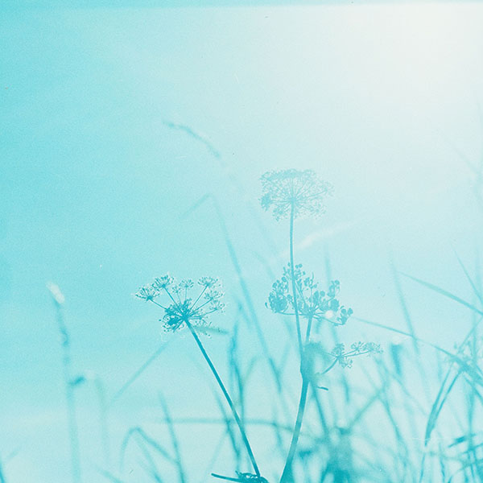

Kayt Zahn
Graphic Designer
With a Bachelor's Degree in Commercial Photography and working on an Associates Degree in Advertising and Graphic Design, I am looking for full time work as a Graphic Designer in the Raleigh, North Carolina area.
Featured Projects
View selected projects below.
Blue Flowers
Summary or description of the project and/or your role in it. Add as many paragraphs as you need.
View project / case studyWork Experience
Optional paragraph for work experience summary. Not a part of the job details. Delete if not being used.
Freelance Photographer
Kayt Z. Photo
03/2018-Present
As a freelance photographer I handled every aspect of the photography business. This includes planning shoots, coordinating with clients, taking images, all post production, running social media m=pages and website, etc.
Education
Appalachian State University - Boone, NC
Bachelor of Science in Commercial Photography, 2016-2020
Photos selected for 3 ASU Commercial Photography photo shows.
Wake Technical Community College - Raleigh, NC
Associates in Advertising and Graphic Design, 2022-2024